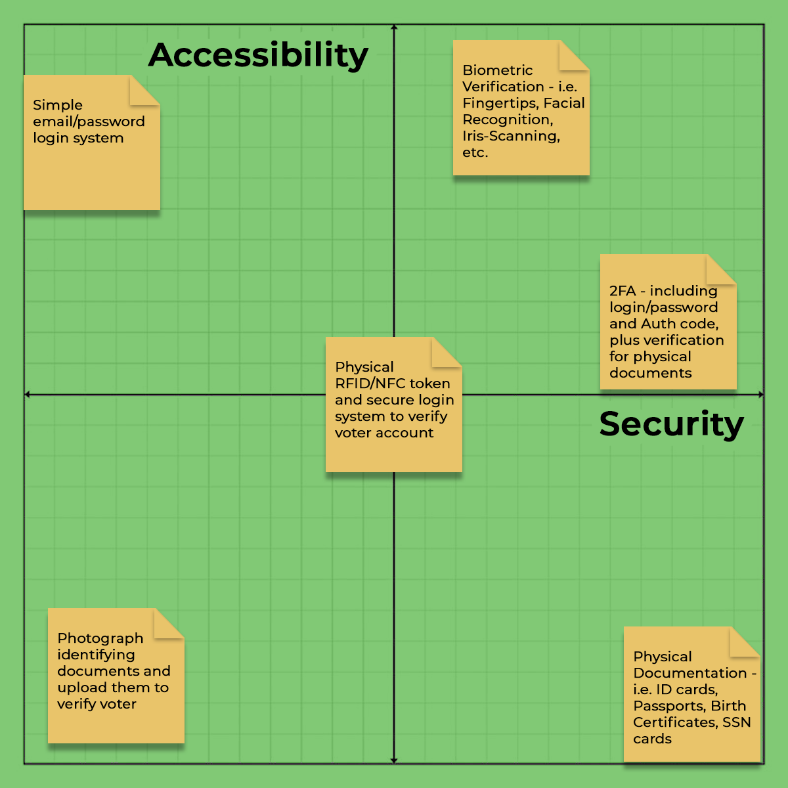

Via
How do we create a secure and accessible voting experience for users?
In the Spring of 2020, Professor Cassini Nazir challenged us to solve a problem using the User Experience Design process.
My team and I took on the challenge, and with the ongoing election cycle, found ourselves focusing in on the lack of technological solutions to voting in the world at large. In hindsight, with wide-spread allegations of voter fraud damaging the integrity of democracy, it seems a secure technological solution for voting is more necessary than ever before.
We began with research. We looked into current voting technology as it pertained to mobile applications and discovered a lack of sufficient cyber-security measures that made app-based voting a fantasy for the moment. Our professor encouraged us to continue with the thought experiment, so we ended up looking into voting apps for reality television and online competitions, as they had implementations that were applicable to our goals, and began working towards a user experience operating under the assumption that the research existed.
We decided to develop a 2 x 2 matrix to develop a greater understanding of our goals and challenges. Developing the spectra of operation for the matrix took some debate, but we settled on Security v. Accessibility, our research having indicated that these two aspects of our design were paramount.
Using the insights gleaned from our market research and our spectra case study, we narrowed in on a paired set of applications, one for mobile, and the other for a tablet or kiosk with accompanying scanning software. Secure registration and account verification were prioritized as part of the sign-up/log-in process. We set the default screen to use location data to access and display current and upcoming locally registered elections and ballots.
Check out the final prototypes below. The maps page pins nearby polling locations, with different colors indicating the wait times at each. If the user is logged in on the device, a secure session is established, indicated by the lock icon in the upper right of the fixed header. If the user isn't logged in, they are prompted to do so, and cannot access ballots unless logged in. They can still access the map page, and navigate to local polling stations. The kiosk offers much the same functionality as the mobile app, but has a larger focus on documentation for verification purposes.
Wanna chat? You can find me at muqdara95@gmail.com.
Wanna chat? You can find me at muqdara95@gmail.com.